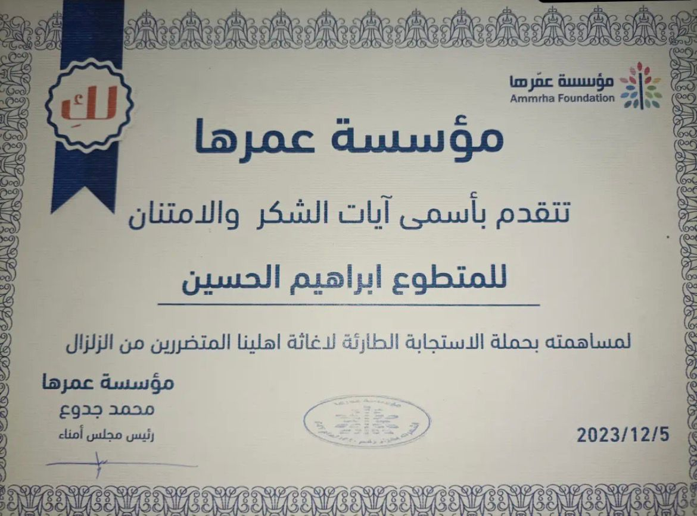

🤝 Humanitarian Work
Omraha Volunteer Team — فريق عمرها التطوعي

Certificate from Omraha Volunteer Team (فريق عمرها التطوعي), a community volunteer organization, recognizing humanitarian work during the 2023 earthquake in Syria.
Served as an effective team leader, coordinating relief efforts and remaining on the ground for days assisting affected communities — helping displaced families and supporting ongoing aid operations.